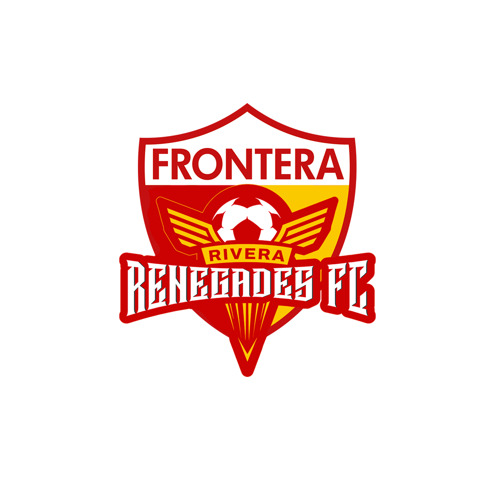
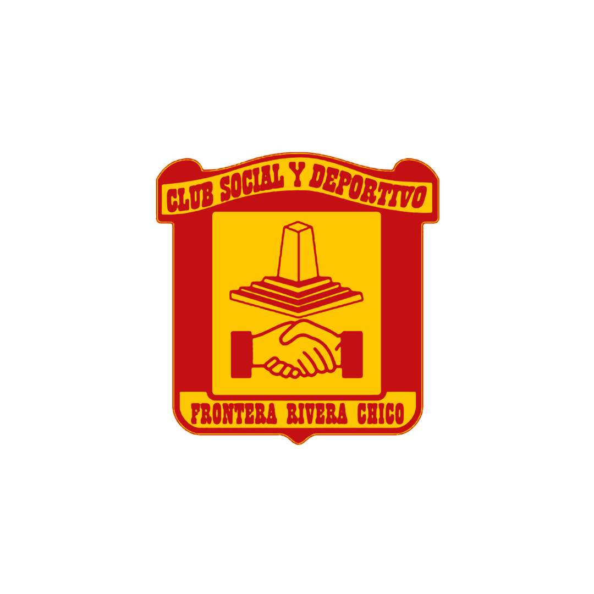

{{ site.data.inicio.linea1 | escape }}
{{ site.data.inicio.linea2 | escape }} {{ site.data.inicio.destacado | escape }}
{{ site.data.inicio.introduccion | escape }}
NUEVO · CAMISETA ALTERNATIVA 2027{{ site.data.camiseta_2027.titulo | escape }}
{{ site.data.camiseta_2027.subtitulo | escape }}
2027 Imagen del prototipo en preparación
{{ site.data.camiseta_2027.descripcion | escape | newline_to_br }}
{{ site.data.camiseta_2027.aviso | escape }}
{{ site.data.bloques_inicio.etiqueta_identidad | escape }}
{{ site.data.bloques_inicio.titulo_identidad | escape }}
{{ site.data.bloques_inicio.identidad_parrafo_1 | escape }}
{{ site.data.bloques_inicio.identidad_parrafo_2 | escape }}
Conocé nuestra historia ↗{{ site.data.frases.etiqueta | escape }}
“{{ site.data.frases.cita_padre_silva | escape }}”{{ site.data.frases.autor_padre_silva | escape }}
{{ site.data.bloques_inicio.etiqueta_descubri | escape }}
{{ site.data.bloques_inicio.titulo_descubri | escape }}
{{ site.data.bloques_inicio.bajada_descubri | escape }}
{{ site.data.bloques_inicio.fecha_ascenso | escape }}
{{ site.data.bloques_inicio.titulo_ascenso | escape }}
{{ site.data.bloques_inicio.bajada_ascenso | escape }}
Leé el relato del ascenso ↗{{ site.data.bloques_inicio.etiqueta_simbolos | escape }}
{{ site.data.bloques_inicio.titulo_simbolos | escape }}
{{ site.data.bloques_inicio.bajada_simbolos | escape }}



El archivo escrito
HISTORIAS PARA LEER.
El fútbol también se cuenta en versos, recuerdos y crónicas.
{{ site.data.bloques_inicio.etiqueta_fotos | escape }}
{{ site.data.bloques_inicio.titulo_fotos | escape }}
{{ site.data.bloques_inicio.bajada_fotos | escape }}